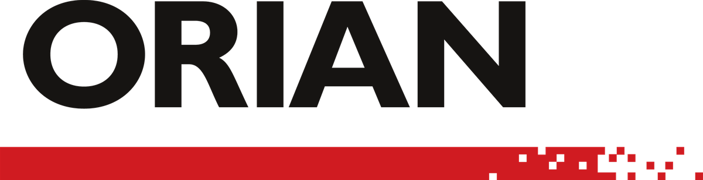

שלושה קונספטים
לעמוד הבית של אוריין
שלושת העמודים למטה הם פרוטוטייפים חיים - הכל אמיתי ורץ בדפדפן: התנועה, הגלילה, הווידאו והמצבים הרספונסיביים. גללו בתוך כל עמוד כדי לראות את הרצף המלא.

פרוטוטייפ · עמוד הביתשלושת העמודים למטה הם פרוטוטייפים חיים - הכל אמיתי ורץ בדפדפן: התנועה, הגלילה, הווידאו והמצבים הרספונסיביים. גללו בתוך כל עמוד כדי לראות את הרצף המלא.